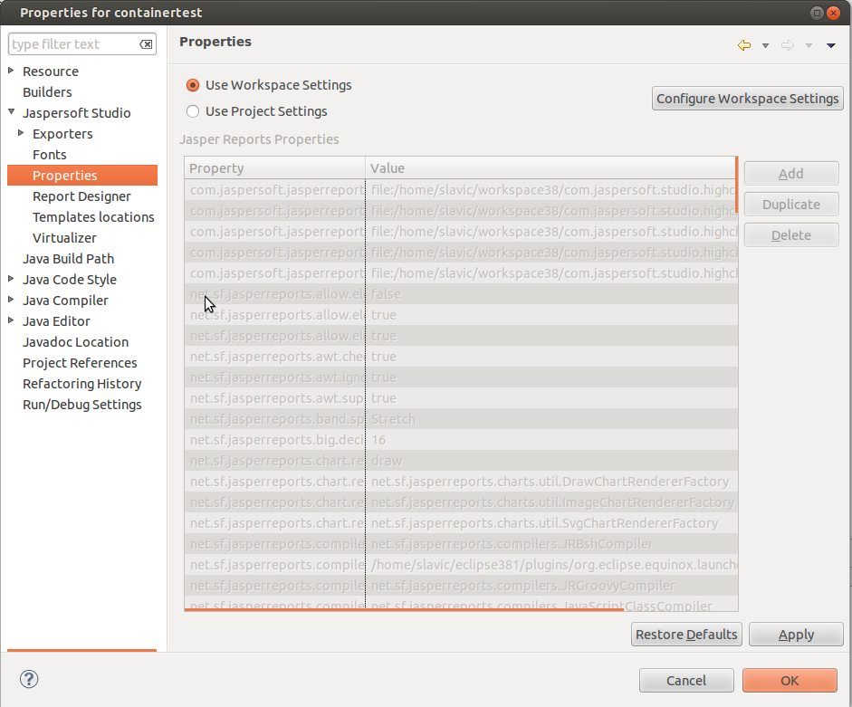
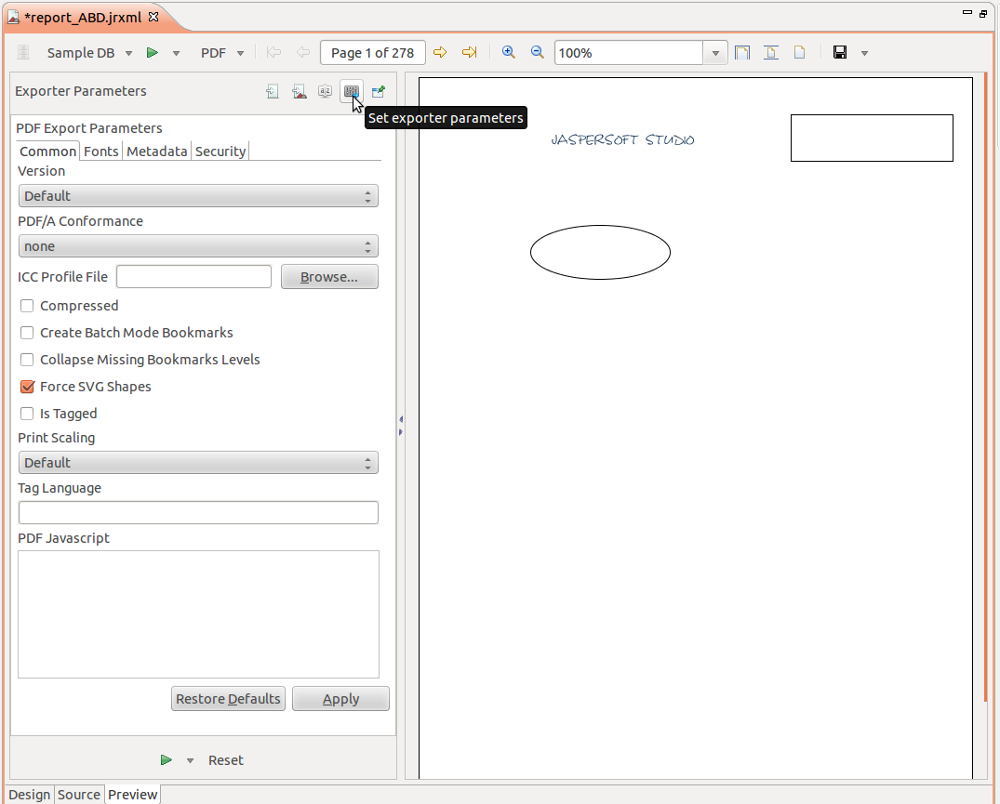

All settings related to Jaspersoft Studio, editors, or Jasper reports parameters are stored at the level of Eclipse instance of project instance. In case of project level preferences because this are stored in a file located inside the project it's possible to share this file in a Team repository together with CLASSPATH or other eclipse settings.
To find global settings open Window → Preferences → Jaspersoft Studio from the menu, to find Project settings, select the project and look at Project → Properties menu, in both cases a preferences dialog will pop-up. All Jaspersoft Studio and JasperReports preferences are located in “Jaspersoft Studio” category. In case of projects it's possible to use Global preferences “Use Workspace Settings” radio button is selected, or override global settings at project level, “Use Project Settings” radio button si selected.
There are some designer preferences like shadow type, borders, grid, rulers and grid configurations. JasperReports compatibility settings help saving reports in old formats. Exporter properties for almost all of supported formats, this preferences can be overridden for each report just before report preview in left panel in the same place we fill report parameters. Font lists, Expression Editor settings described in Expression Editor tutorials, Virtualizer settings, locations from which report templates are loaded, and JasperReports properties.
 